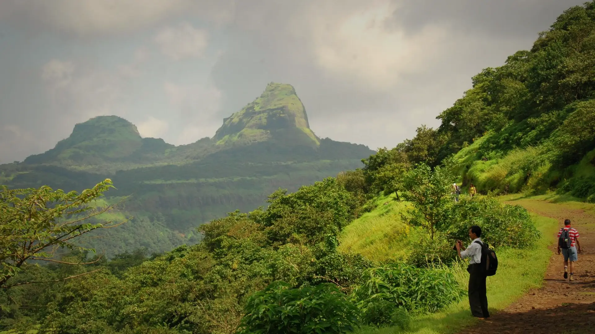

01Day 1 · Lonavalakm 0.1
Out of Lonavala
9amMeet · Lonavala station
Meet at Lonavala station at 9 am. A vehicle takes the group to the start, then about 8 km on foot to the base village.

Photo: Mukundvg1942, CC BY-SA 4.0राजमाची · Pune, Western Ghats
The trek in one line, and what you can do with it.
An easy two-day traverse: up from the Lonavala side, down to the Konkan at Karjat.
5 stops on the map, then the climb. Scroll the stops and the map follows.
01Day 1 · Lonavalakm 0.1
9amMeet · Lonavala station
Meet at Lonavala station at 9 am. A vehicle takes the group to the start, then about 8 km on foot to the base village.
01Day 1 · Rajmachi villagekm 15.6
UdhewadiVillage · On the plateau
The base village, Udhewadi, sits on the machi, the plateau below the forts. Tents for the night.
02Day 2 · Shrivardhan · 826 mkm 17.0
2Forts · Shrivardhan and Manaranjan
Shrivardhan, at about 826 m, and Manaranjan stand on either side of the machi. The fort played a part in the First Anglo-Maratha War and is a protected monument.
02Day 2 · Kondana caveskm 22.1
16Caves · Buddhist
After lunch the trail drops off the plateau to the Kondana caves: sixteen Buddhist caves cut in the 1st century BC, among them a chaitya hall.
02Day 2 · Kondanekm 24.3
~7pmKarjat by · By road
Down to the villages at the foot of the hill; Bikat's vehicles meet the group at Kondhavane for the drive to Karjat station.
Best in Jun–Sep, Nov–Mar.
Dark: the months the trek’s sources call its best. Mid: possible. See all treks in June.
Base prices from 4 operators’ own pages, per person. GST and travel are often extra. Treqz sells nothing.
₹1,399–1,999
The practical things, then the questions people ask.
From Mumbai, the Konark Express (11019) leaves CSMT at 2:00 pm and reaches Lonavala at 4:27 pm. From Pune, a 3:00 pm local reaches Lonavala at 4:20 pm.
Treks and TrailsAn 8 km jeep ride takes you towards the base village. In peak season the jeeps get overbooked, so expect to wait.
Treks and TrailsNo permit is needed. The local committee collects ₹5 a person at the base village.
TrekhieversUdhewadi homestays keep men and women in separate rooms. There are no couple rooms.
Treks and TrailsIf rain stops camping, groups sleep in a villager's common hall for 40–50 people.
TrekhieversThere are common washrooms in the base village. There are none on the trail.
TrekhieversAbout 24.4 km of walking over 2 days on the trail.
The highest point is 826 m, about 180 m above the start.
Its sources grade it Easy.
Jun–Sep, Nov–Mar. It is also possible in May.
₹1,399 to ₹1,999 per person: base prices from 4 operators' own pages. GST and travel are often extra.
No permit is needed. The local committee collects ₹5 a person at the base village.
Full-sleeve top, Full track pants, Warm clothes, Rainwear, poncho or waterproof jacket, Sun cap, Trekking shoes, Good torch and spare battery, Sleeping bag or two bedsheets. The full list is on the 3D page.
Yes: Dec–Feb is among its best months.
Its sources grade it Easy and it takes 2 days on the trail, with a highest point of 826 m.
Rajgad to Torna, Harishchandragad, Sandhan Valley, Kalsubai, Kudremukh.


Treks in June · Treks in July · Treks in August · Treks in September · Treks in the Western Ghats · Beginner Treks in the Western Ghats · Winter Treks in India · Monsoon Treks in India · Easy Treks in India for Beginners · Weekend Treks in India (1–2 Days) · Rajmachi vs Kalsubai · Rajmachi vs Harishchandragad · Rajmachi vs Rajgad to Torna · Rajmachi vs Sandhan Valley · Free trek finder · All treks in 3D